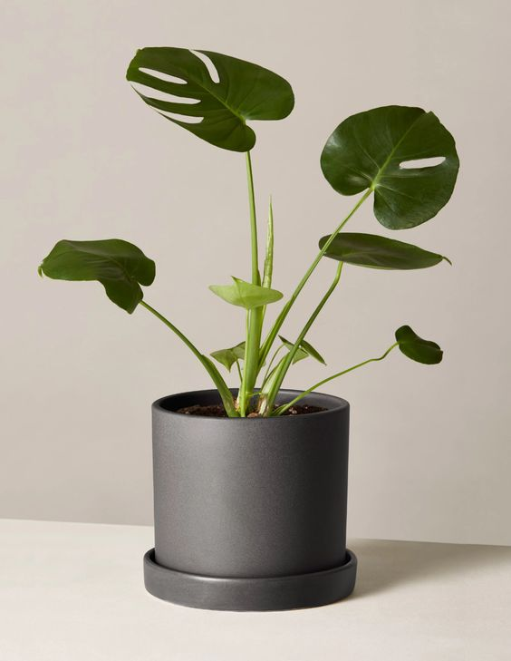
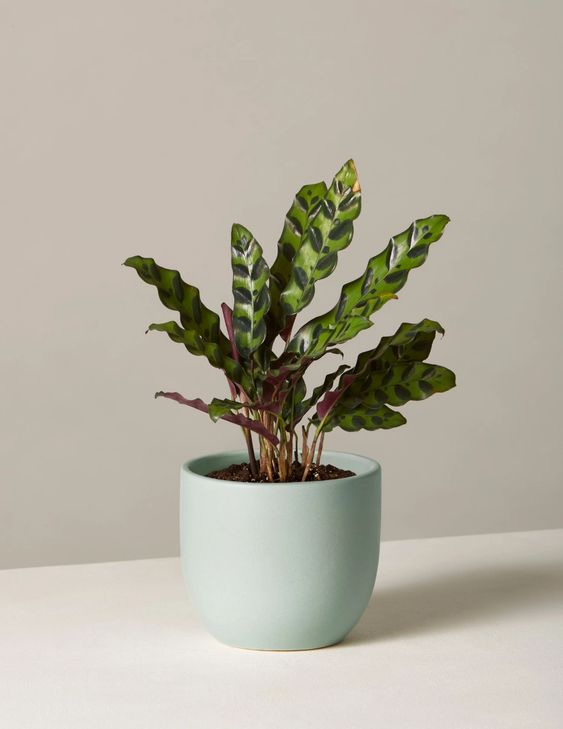
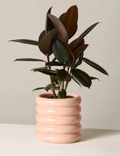
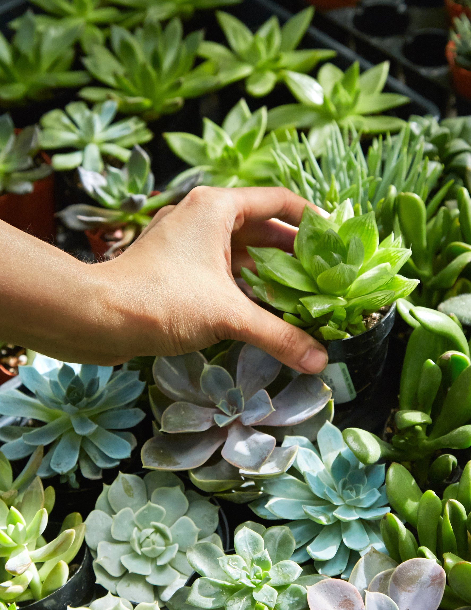

Plants make us happier, healthier, more efficient and boost our creativity. They even clean the air we breathe. But all our modern city-living has us indoors a lot. So we thought: why not bring the outdoors in? We think everyone deserves to have their own personal plant oasis. And, we think finding your new plant should be, well, easy.